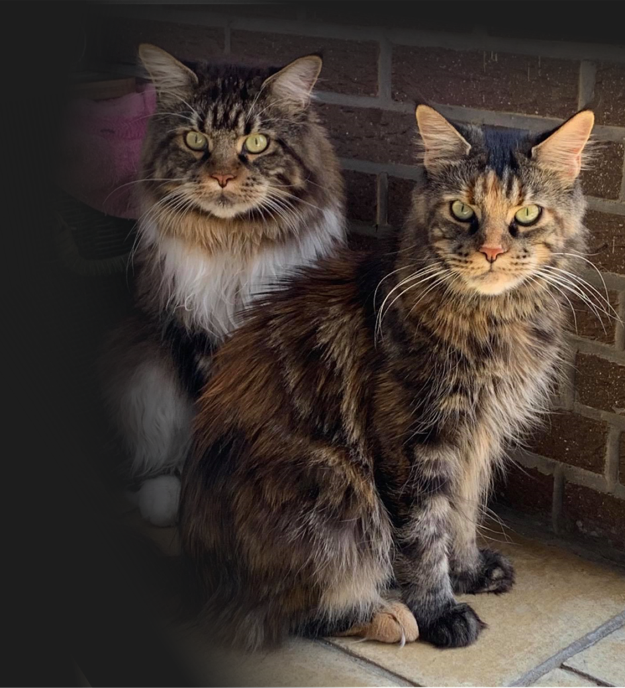

Do you know how to read a cat-food label?

The information printed on a bag or tin of cat food can tell you a great deal — once you know how to read it. As a pet-food consultant, I always encourage owners to turn the package over and look beyond the marketing on the front.
Ingredients are listed by weight
The ingredient list is ordered from most to least, measured before cooking. For an obligate carnivore like the cat, you want a named animal protein (such as “chicken” or “salmon”) at or near the very top — not a vague term like “meat derivatives”. Named sources tell you exactly what is in the bowl.
The analytical constituents
This panel shows the percentages of protein, fat, fibre, ash and moisture. Remember that dry and wet foods cannot be compared directly because of their very different moisture content; to compare fairly you need to look at the values on a dry-matter basis.
Complete vs. complementary
A food marked complete provides everything a cat needs in the right balance and can be fed on its own. A complementary food (many treats and some pouches) is only meant as an addition and should not make up the whole diet.
When in doubt, ask
Every cat is an individual, with different needs depending on age, activity, weight and health. If a label leaves you unsure, ask your breeder or vet — choosing the right food is one of the kindest things you can do for your cat.